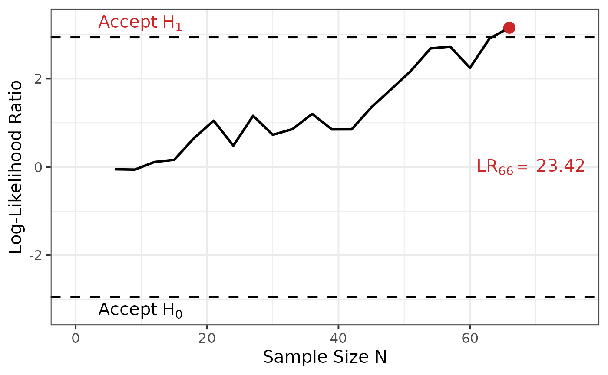
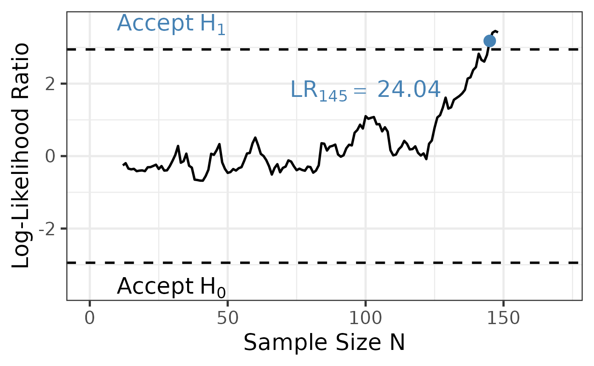

Sequential One-Way ANOVA
Meike Snijder-Steinhilber
2026-03-10
Source:vignettes/one_way_anova.Rmd
one_way_anova.RmdThe sequential one-way fixed effects ANOVA is a sequential hypothesis
test based on the Sequential Probability Ratio Test (SPRT) framework
(Wald, 1947). It extends SPRTs to the
comparison of two or more independent groups and can be used as an
efficient alternative to the classical fixed-sample one-way ANOVA. For
detailed information, see Steinhilber et al.
(2024). For a general introduction to SPRTs, see the vignette
vignette("sprt").
Note: The repeated measures ANOVA is not yet
implemented in the sprtt package.
Sequential One-Way ANOVA
Analysis of variance (ANOVA) is widely used to compare means across multiple groups. Traditional fixed-sample ANOVAs require an a priori power analysis to determine the necessary sample size, which often results in large samples, especially when expected effect sizes are small (Steinhilber et al., 2024). Given the prevalence of small to medium effects in psychology (Funder & Ozer, 2019; Richard et al., 2003), many studies end up underpowered because the required sample sizes exceed available resources (Button et al., 2013; Szucs & Ioannidis, 2017).
The sequential one-way ANOVA provides an efficient alternative by applying the SPRT framework to comparisons of \(k\) groups. Instead of collecting a fixed number of observations, data are collected sequentially and the test evaluates evidence after each step until a decision is reached (Steinhilber et al., 2024).
Hypotheses
The sequential one-way ANOVA tests the following hypotheses, specified in terms of Cohen’s \(f\):
\[\begin{aligned} H_0 &: f = 0 \\ H_1 &: f = f_{\text{exp}}, \quad (f_{\text{exp}} > 0) \end{aligned}\]Cohen’s \(f\) is defined as:
\[f = \frac{\sigma_m}{\sigma}\]
where \(\sigma\) is the common within-population standard deviation and \(\hat{\sigma}_m = \sqrt{\frac{\sum_{i=1}^{k}(m_i - \bar{m})^2}{k}}\), with \(m_i\) being the mean of group \(i\) and \(\bar{m}\) the overall mean across all \(k\) groups. In other words, \(f\) captures the spread of group means relative to the common within-group variability.
The \(F\) Statistic
At the \(n\)-th sequential step, the \(F\) statistic is calculated from \(k\) groups with \(n\) observations each (total \(N = k \cdot n\), with \(n, k \geq 2\)):
\[F_n = \frac{SS_{\text{effect},n} / df_1}{SS_{\text{residual},n} / df_{2,n}}\]
with
\[SS_{\text{effect},n} = \sum_{i=1}^{k} n(\bar{x}_i - \bar{x})^2\]
\[SS_{\text{residual},n} = \sum_{i=1}^{k} \sum_{j=1}^{n} (x_{i,j} - \bar{x}_i)^2\]
\[df_1 = k - 1 \qquad \text{and} \qquad df_{2,n} = N - k\]
where \(\bar{x}\) is the overall mean, \(\bar{x}_i\) is the mean of group \(i\), and \(x_{i,j}\) is the \(j\)-th observation in group \(i\) (Steinhilber et al., 2024; Wetherill & Glazebrook, 1986).
The Likelihood Ratio
The likelihood ratio at step \(n\) is defined as the ratio of the likelihood under \(H_1\) to the likelihood under \(H_0\). Using Cox’s theorem (Cox, 1952), it is sufficient to compute this ratio only for the current \(F_n\) statistic rather than the entire sequence of observations:
\[\text{LR}_n = \frac{f(F_n \mid df_1,\; df_{2,n},\; \Delta_{1n})}{f(F_n \mid df_1,\; df_{2,n})}\]
The numerator is the density of a non-central \(F\) distribution with non-centrality parameter \(\Delta_{1n}\), and the denominator is the density of a central \(F\) distribution (i.e., \(\Delta = 0\) under \(H_0\)). The non-centrality parameter is linked to Cohen’s \(f\) via:
\[\Delta_1 = f_{\text{exp}}^2 \cdot N\]
Decision Boundaries
The sequential ANOVA uses two decision boundaries based on the specified error rates:
- Upper boundary: \(A = \frac{1-\beta}{\alpha}\)
- Lower boundary: \(B = \frac{\beta}{1-\alpha}\)
where \(\alpha\) is the Type I error rate and \(\beta\) is the Type II error rate.
Decision Rule
At each analysis step, compare the likelihood ratio \(\text{LR}_n\) to these boundaries:
- If \(\text{LR}_n \geq A\): Stop data collection and accept \(H_1\)
- If \(\text{LR}_n \leq B\): Stop data collection and accept \(H_0\)
- If \(B < \text{LR}_n < A\): Continue collecting data (no decision yet)
Efficiency and Robustness
Simulations with \(k = 4\) groups demonstrate that the sequential ANOVA is substantially more efficient than fixed-sample designs: in 87% of cases the sequential sample was smaller than the fixed sample, with an average sample size reduction of 58%. Efficiency gains are particularly pronounced for small expected effect sizes (Steinhilber et al., 2024).
Robustness analyses showed that the sequential and fixed ANOVA behave similarly under assumption violations. Both procedures are robust to non-normal data (simulated using Gaussian mixture distributions) and to mildly unequal variances or group sizes. The most critical scenario is a combination of unbalanced group sizes and unequal variances, specifically when smaller groups have larger variances—in this case, \(\alpha\) error rates can be inflated in both the sequential and the fixed ANOVA.
As with all sequential procedures, effect size estimates from individual sequential ANOVAs are conditionally biased (see Section “The Bias-Efficiency Tradeoff”). However, the weighted average across studies closely approximates the true population effect size (Steinhilber et al., 2024).
The seq_anova() function in the sprtt
package implements the sequential one-way fixed effects ANOVA described
here.
How to use seq_anova()
Step 1: Simulate or Load Data
First, we simulate data for this tutorial. In a real-world application, you would use actual data as it arrives from your ongoing data collection.
set.seed(333)
# Generate data with a medium effect
data <- sprtt::draw_sample_normal(
k = 3, # number of groups
f = 0.25, # effect size (Cohen's f)
max_n = 22 # maximum sample size per group
)Let’s examine the structure of the simulated data:
# View the first few rows
head(data)
## y x
## 1 0.27522897 1
## 2 -1.21852709 2
## 3 -0.57408712 3
## 4 1.23054388 1
## 5 0.94104124 2
## 6 0.04779396 3
# Check the sample sizes per group for the first 6 (2*k) data points
table(data$x[1:6])
##
## 1 2 3
## 2 2 2The data frame contains two columns: y (the continuous
outcome variable) and x (the grouping factor with 3
levels).
Step 2: Initial Sequential Analysis
We can perform the first sequential ANOVA after collecting at least 2 observations per group (minimum \(n = 6\) total for 3 groups).
# Calculate the sequential ANOVA
anova_results <- sprtt::seq_anova(
y ~ x,
f = 0.25,
data = data[1:6, ],
verbose = FALSE
)
# View results
anova_results
##
## ***** Sequential ANOVA *****
##
## formula: y ~ x
## test statistic:
## log-likelihood ratio = -0.053, decision = continue sampling
## SPRT thresholds:
## lower log(B) = -2.944, upper log(A) = 2.944
# Access the decision
anova_results@decision
## [1] "continue sampling"The decision indicates we should continue data collection. In practice, it’s optimal to recalculate the sequential test after each new observation (or small batch of observations).
Step 3: Repeated Sequential Testing
As new data arrives, we repeatedly recalculate the sequential ANOVA. This is the core principle of sequential testing: check the decision criterion after each batch of new observations.
Let’s assume we’ve now collected 20 observations total. We recalculate the sequential ANOVA with the updated dataset:
# Calculate sequential ANOVA with larger sample
anova_results <- sprtt::seq_anova(
y ~ x,
f = 0.25,
data = data[1:20, ],
verbose = FALSE
)
# View results
anova_results
##
## ***** Sequential ANOVA *****
##
## formula: y ~ x
## test statistic:
## log-likelihood ratio = 0.964, decision = continue sampling
## SPRT thresholds:
## lower log(B) = -2.944, upper log(A) = 2.944
# Check decision
anova_results@decision
## [1] "continue sampling"We still receive the decision to continue data collection. This means we repeat the process: collect more data, recalculate the sequential test, and check the decision again. This cycle continues until we reach a definitive decision to accept \(H_0\) or \(H_1\).
Step 4: Final Analysis
# Calculate sequential ANOVA with complete dataset
anova_results <- sprtt::seq_anova(
y ~ x,
f = 0.25,
data = data,
verbose = TRUE
)
# View full results
anova_results
##
## ***** Sequential ANOVA *****
##
## formula: y ~ x
## test statistic:
## log-likelihood ratio = 3.153, decision = accept H1
## SPRT thresholds:
## lower log(B) = -2.944, upper log(A) = 2.944
## Log-Likelihood of the:
## alternative hypothesis = -3.293
## null hypothesis = -6.447
## alternative hypothesis: true difference in means is not equal to 0.
## specified effect size: Cohen's f = 0.25
## empirical Cohen's f = 0.4684039, 95% CI[0.1741801, 0.6969498]
## Cohen's f adjusted = 0.415
## degrees of freedom: df1 = 2, df2 = 63
## SS effect = 12.63455, SS residual = 57.58624, SS total = 70.22079
## *Note: to get access to the object of the results use the @ or [] instead of the $ operator.With a total sample size of \(N =\) 66, we have reached a decision to accept H1. Therefore, we stop data collection.
You can access specific components of the results object using the
@ operator:
# Access the decision
anova_results@decision
## [1] "accept H1"
# Access the likelihood ratio
anova_results@likelihood_ratio
## [1] 23.41619
# Access the total sample size
anova_results@total_sample_size
## [1] 66How to plot the ANOVA results
To visualize the likelihood ratio progression over time,
seq_anova() must calculate the sequential test at each
intermediate sample size. Since these calculations are only needed for
plotting and increase computational time, they are performed only when
plot = TRUE.
Scenario 1: Balanced Data with Perfect Sampling Order
When your data are perfectly balanced (equal \(n\) per group) and sampled in order, you
can set plot = TRUE and use either the default
seq_steps = "single" or explicitly specify
seq_steps = "balanced". Both will produce accurate
likelihood ratio trajectories.
See ?seq_anova for details on the plot and
seq_steps arguments and other options.
set.seed(333)
data <- sprtt::draw_sample_normal(3, f = 0.25, max_n = 22)
# calculate the SPRT -----------------------------------------------------------
# Default: plot = TRUE with seq_steps = "single"
anova_results <- sprtt::seq_anova(y~x, f = 0.25,
data = data, plot = TRUE)
# Explicitly specify seq_steps = "single"
anova_results <- sprtt::seq_anova(y~x, f = 0.25,
data = data, plot = TRUE,
seq_steps = "single")
# Use balanced sequential steps
anova_results <- sprtt::seq_anova(y~x, f = 0.25,
data = data, plot = TRUE,
seq_steps = "balanced")
# plot the results -------------------------------------------------------------
sprtt::plot_anova(anova_results)
Scenario 2: Unbalanced Data with Imperfect Sampling Order
In real-world applications, data often arrive with unequal group sizes and in imperfect group order. This scenario demonstrates how to handle such cases.
Why custom sequential steps are needed:
- The
"balanced"option assumes equal \(n\) across groups at each step, which doesn’t match our data structure - The
"single"option would produce an error because some groups have fewer than 2 observations in the initial first data points - Solution: Define custom sequential steps using a numeric vector
In this example, we start the sequential testing after 12 observations (ensuring each group has sufficient data), then calculate the likelihood ratio after each subsequent observation.
set.seed(333)
# Generate unbalanced data with a 1:1:2 sampling ratio -------------------------
data <- sprtt::draw_sample_normal(3, f = 0.25, max_n = 37, sample_ratio = c(1,1,2))
# Randomize the order to get a more realistic data collection
data <- data[sample(nrow(data)),]
# Calculate the SPRT with custom sequential steps ------------------------------
anova_results <- sprtt::seq_anova(
y~x,
f = 0.25,
data = data,
plot = TRUE,
# Start at n=12, then test after each observation
seq_steps = 12:nrow(data))
# Plot the results with custom styling -----------------------------------------
sprtt::plot_anova(anova_results,
labels = TRUE,
position_labels_x = 0.2,
position_labels_y = 0.2,
position_lr_x = 100,
position_lr_y = 1.8,
font_size = 20,
line_size = 1,
highlight_color = "steelblue"
)